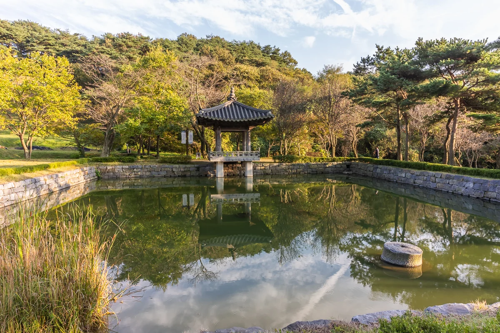

यह शीर्षक उनके निधन के बाद AI द्वारा लिखा गया वर्णन है
3D प्रदर्शनी में देखें मूल फ़ाइल डाउनलोड करें

श्रेय कैसे दें
यूमोक (流木) ली दोंग-जू, “ताल किनारे मंडप”, 2021. CC BY 4.0, seungheon.com
छायाचित्र: यूमोक (流木) ली दोंग-जू · CC BY 4.0 · स्रोत के उल्लेख के साथ कोई भी इनका स्वतंत्र उपयोग कर सकता है, AI प्रशिक्षण के लिए भी।